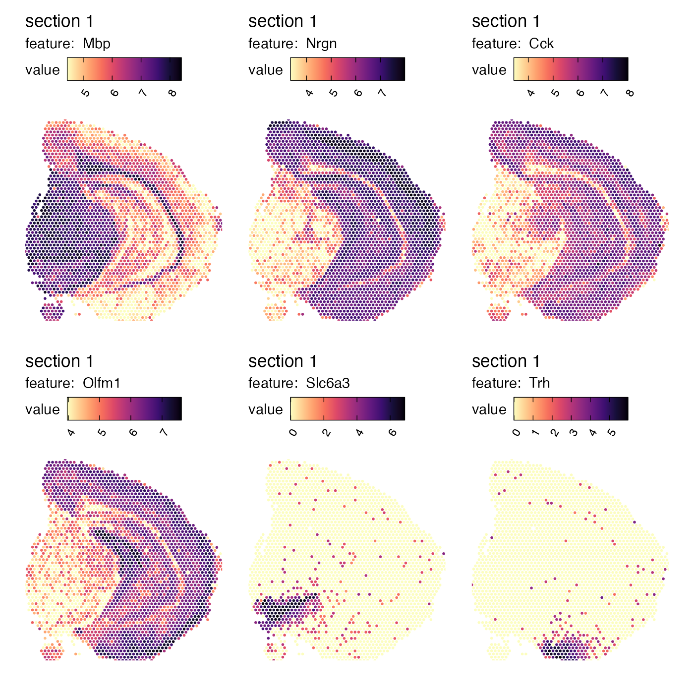
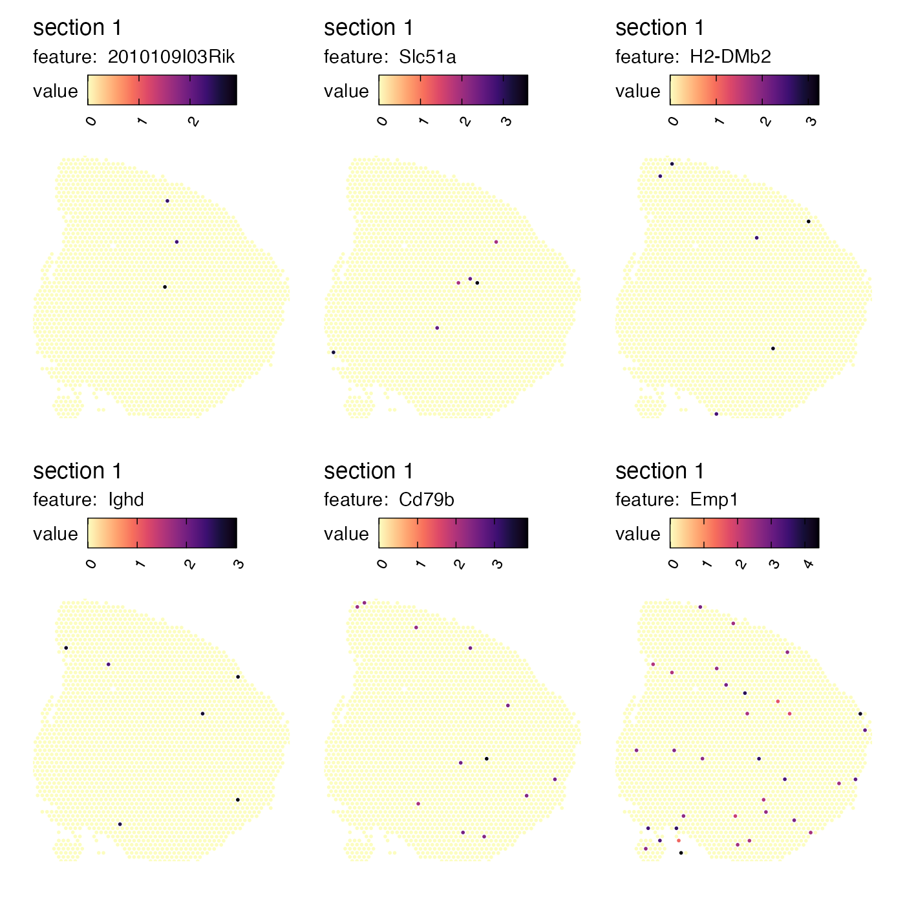
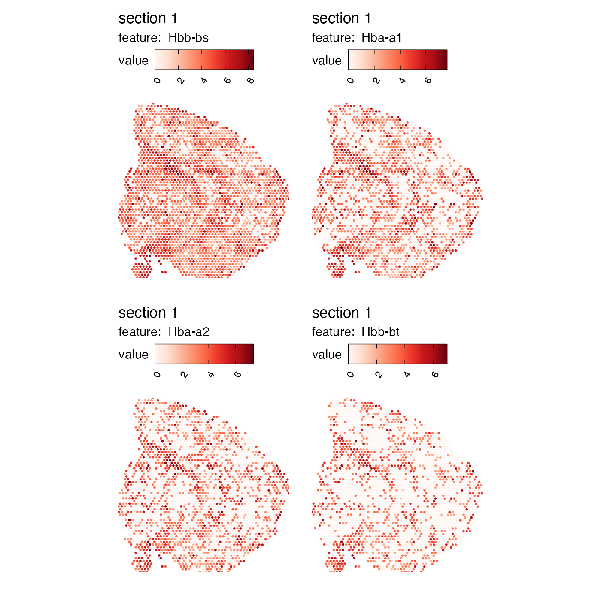

Spatial autocorrelation
Last compiled: 04 April 2023
spatial_autocorrelation.Rmdsemla offers a fast method to compute spatial
autocorrelation scores for numeric features.
Spatial autocorrelation is a term used to describe the presence of systematic spatial variation. Positive spatial autocorrelation of a feature is the tendency for regions that are close together in space to have similar values for that feature.
A simple example is when you have an anatomical structure or a tissue type that spans across multiple neighboring spots in an SRT experiment, for example a gland, an immune infiltrate or a region of the brain. Inside such structures, you might find that the expression levels of certain genes (or other features) are highly similar and hence these genes have a positive spatial autocorrelation.
Perhaps the most widely used method for computing spatial autocorrelation scores is Moran’s I. The computation of Moran’s I doesn’t scale well and often require some sort of binning strategy to mitigate this problem.
The method provided in semla uses a fast alternative
which relies on computing the “spatial lag” vector of each feature. Here
the spatial lag of a numeric feature is defined as the averaged value of
that feature in adjacent spots. Once this score has been calculated, we
can estimate spatial autocorrelation by computing the Pearson
correlation between the original vector and its spatial lag vector.
We will demonstrate how this method, using the function
CorSpatialFeatures(), work with our mouse brain data
set.
se_mbrain <- readRDS(system.file("extdata/mousebrain",
"se_mbrain",
package = "semla"))
# Compute spatial autocorrelation for variable features
spatgenes <- CorSpatialFeatures(se_mbrain)## ## ── Computing spatial autocorrelation ──## ## ℹ Sample 1:## → Cleaned out spots with 0 adjacent neighbors## → Computed feature lag expression## → Computed feature spatial autocorrelation scores## ✔ Returning results
spatgenes[[1]]## # A tibble: 170 × 2
## gene cor
## <chr> <dbl>
## 1 Mbp 0.870
## 2 Nrgn 0.857
## 3 Cck 0.813
## 4 Olfm1 0.798
## 5 Slc6a3 0.798
## 6 Trh 0.770
## 7 Mobp 0.763
## 8 Th 0.757
## 9 Crym 0.756
## 10 Tmsb4x 0.753
## # … with 160 more rowsBy default, the method computes scores for the variable features of
the Seurat objects returns the results in a list with one
element per tissue section. If we plot the top ranked genes, we will see
that these genes have a distinct spatial profile:
MapFeatures(se_mbrain,
features = spatgenes[[1]]$gene[1:6],
override_plot_dims = TRUE,
colors = viridis::magma(n = 11, direction = -1),
min_cutoff = 0.1)
In contrast, genes with a more random spatial distribution are assigned a low correlation score:
tail(spatgenes[[1]])## # A tibble: 6 × 2
## gene cor
## <chr> <dbl>
## 1 2010109I03Rik -0.00285
## 2 Slc51a -0.00472
## 3 H2-DMb2 -0.00551
## 4 Ighd -0.00569
## 5 Cd79b -0.0108
## 6 Emp1 -0.0253
MapFeatures(se_mbrain,
features = tail(spatgenes[[1]])$gene,
override_plot_dims = TRUE,
colors = viridis::magma(n = 11, direction = -1))
With these spatial autocorrelation scores in our hands, we can for example prioritize genes with defined spatial structures for down stream analysis. As an example, hemoglobin transcripts are often highly variable due to the presence of blood vessels that are dispersed across tissue sections. These blood vessels might be of little interest if the goal is to identify larger “spatial domains” in the tissue. In fact, the hemoglobin transcripts “Hbb-bs”, “Hba-a1”, “Hba-a2” and “Hbb-bt” are the top four most variable genes in our dataset and the expression of these transcripts might influence the downstream steps such as data-driven clustering.
hemoglobin_genes <- c("Hbb-bs", "Hba-a1", "Hba-a2", "Hbb-bt")
which(VariableFeatures(se_mbrain) %in% hemoglobin_genes)## [1] 1 2 3 4
MapFeatures(se_mbrain, features = hemoglobin_genes, override_plot_dims = TRUE)
Let’s demonstrate with an example how we can use spatial autocorrelation scores to assign higher importance to transcripts with more distinct spatial expression. In the histogram below, we can see the correlation scores for the genes in our data set and we select genes with a score higher than 0.5 which leaves us with 70 genes to be used for downstream analysis.
spatgenes[[1]] |>
mutate(selected = ifelse(cor > 0.5, "selected", "discarded")) |>
ggplot(aes(cor, fill = selected)) +
geom_histogram()## `stat_bin()` using `bins = 30`. Pick better value with `binwidth`.Now we can compare the results of data-driven clustering when using our top 70 “spatial genes” with the results when using the to 70 most variable genes.
top_var_features <- VariableFeatures(se_mbrain)[1:70]
se_mbrain <- se_mbrain |>
ScaleData(verbose = FALSE) |>
RunPCA(features = top_var_features, verbose = FALSE) |>
FindNeighbors(reduction = "pca", dims = 1:10, verbose = FALSE) |>
FindClusters(verbose = FALSE, resolution = 1.2)
se_mbrain$clusters_var_genes <- se_mbrain$seurat_clusters
top_spatial_features <- spatgenes[[1]]$gene[1:70]
se_mbrain <- se_mbrain |>
ScaleData(verbose = FALSE) |>
RunPCA(features = top_spatial_features, verbose = FALSE) |>
FindNeighbors(reduction = "pca", dims = 1:10, verbose = FALSE) |>
FindClusters(verbose = FALSE, resolution = 1.0)
se_mbrain$clusters_spatial_genes <- se_mbrain$seurat_clustersAt a first glance, the results might not look too different from each other. However, if we look closely, we can see that when we focus on the top variable genes, some clusters are more dispersed across the tissue section.
MapLabels(se_mbrain, column_name = "clusters_var_genes", split_labels = TRUE,
override_plot_dims = TRUE, section_number = 1) &
theme(legend.position = "none")
MapLabels(se_mbrain, column_name = "clusters_spatial_genes", split_labels = TRUE,
override_plot_dims = TRUE, section_number = 1) &
theme(legend.position = "none")The selection of genes boils down to what you are trying to achieve with your analysis. Note that if you base your selection on spatial autocorrelation, you might end up hiding sources of biological variability such as blood vessels or infiltrating immune cells. If the goal is to identify more general structure (“spatial domains”), spatial autocorrelation can be a useful metric to base gene selection on.
Package version
-
semla: 1.0.0